Data Site Comparisons
This page works on mainly comparing the differences between the character rankings for Reddit and Google to see the difference in what people look for when googling or looking at their favorite character in a post.
Comparison by Parallel Coordinates:
The Parallel Coordination Chart places character based off their rank in each server. It is easy to see that there are some characters who are the same rank in both websites while there are others who are dramatically different in one site to another. Below is a color key along with the chart.



star
Using Google Trends to Compare Top Three Googled Characters with Top Two Reddit Characters:
Similarly to the data presented in the Google Data Page, it now takes the top three Googled characters and
see the difference of searches between the top two Reddit like characters. Klee, Reddit's favored character, is a character that
often fell short when it comes to Google searches unlike Zhongli, who is second place for Reddit and fourth for Google. You can now see
their peak popularity and where.
Note for the graph, the y-axis represents the frequency of searches. So when it reaches 100, it is
the peak of when the character was searched for.
star
Conclusion:
The height of every character's popularity will always be when they are first announced. After that, their reruns and events where they are mentioned will have some height (i.e. Klee's summer event from May to June). Most characters between the ranks of Reddit have a high chance of losing their rank on the Google Leaderboard.